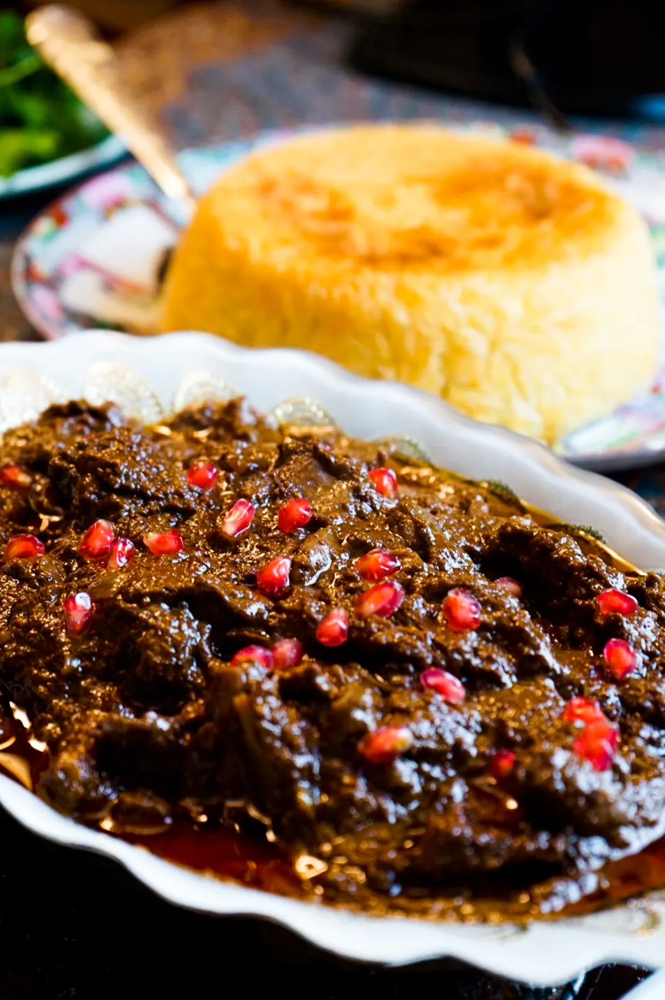

Duck Fesenjan

Fesenjan is my personal favorite dish specifically when made by my loving aunt. The rich duck fat paired with the tartness of pemegranate leaves little do be disred with this dish.
Ingredients
- 2 large onions, peeled and thinly sliced
- 2 pounds chicken legs or duck breast, cut up with skin removed
- 5 tablespoons oil or butter
- 1 teaspoon salt
- ½ cup pomegranate paste dissolved in 2½ cups water, or 4 cups fresh squeezed pomegranate juice
- 1 cup peeled and cubed butternut squash (optional)
- ½ pound or 2 cups very finely ground shelled walnuts
- ½ teaspoon cinnamon
- ¼ teaspoon ground saffron dissolved in 1 tablespoon hot water
- Seeds of a whole fresh pomegranate